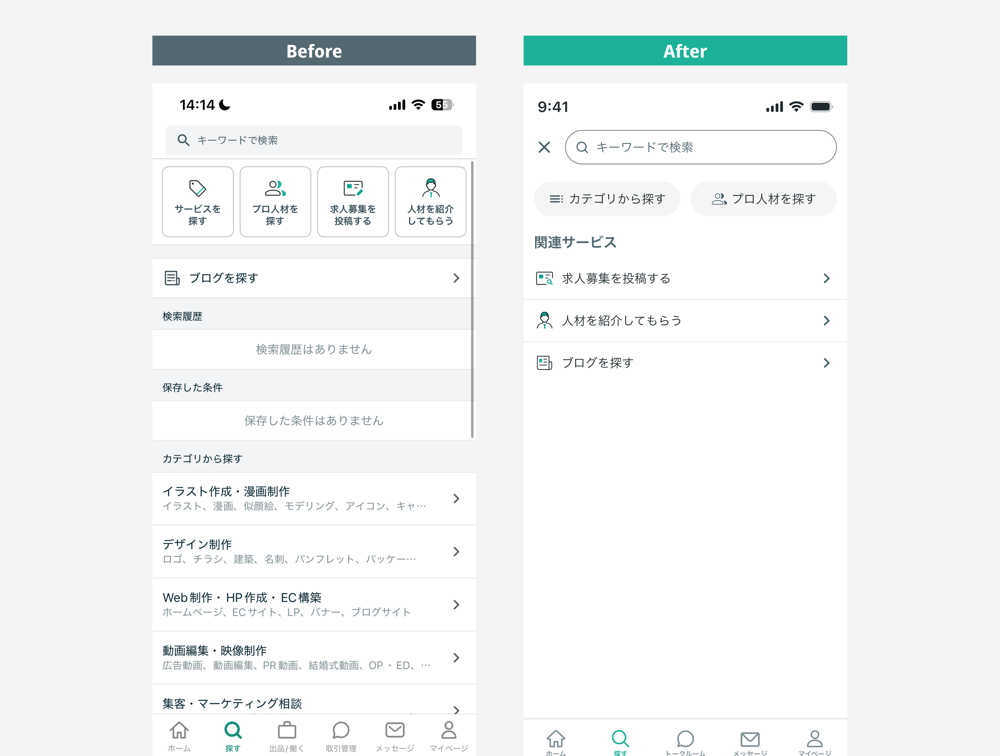
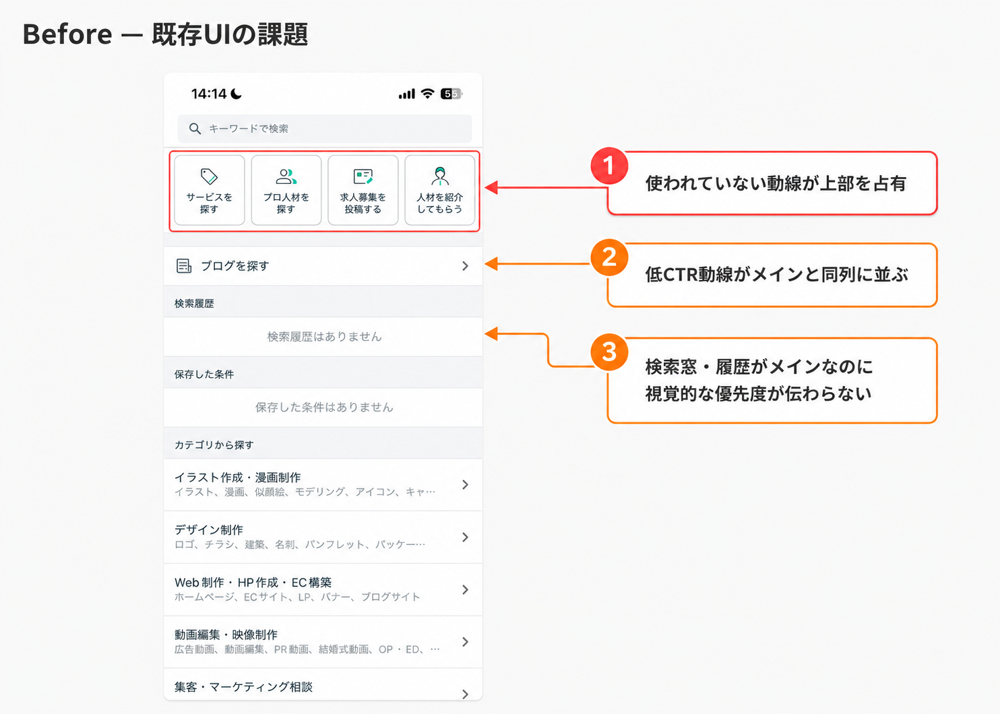
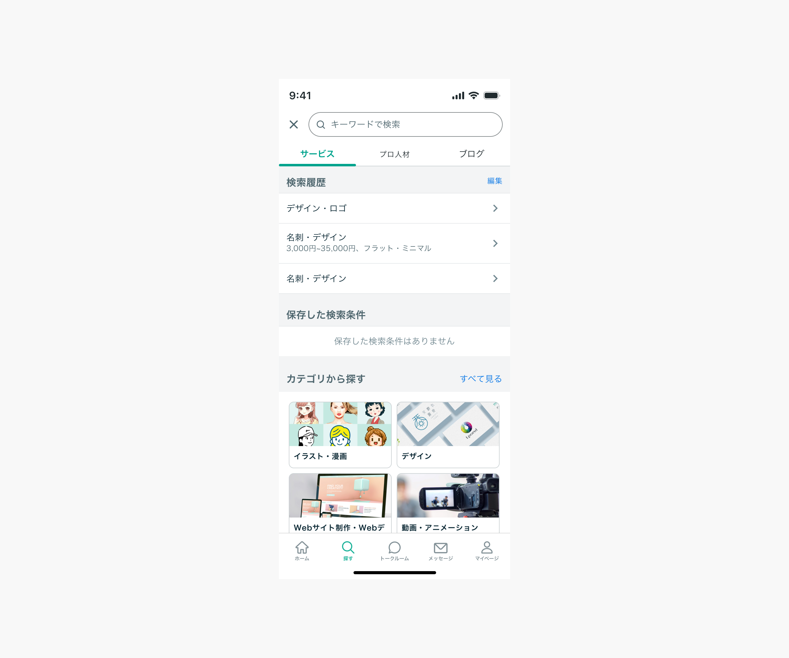
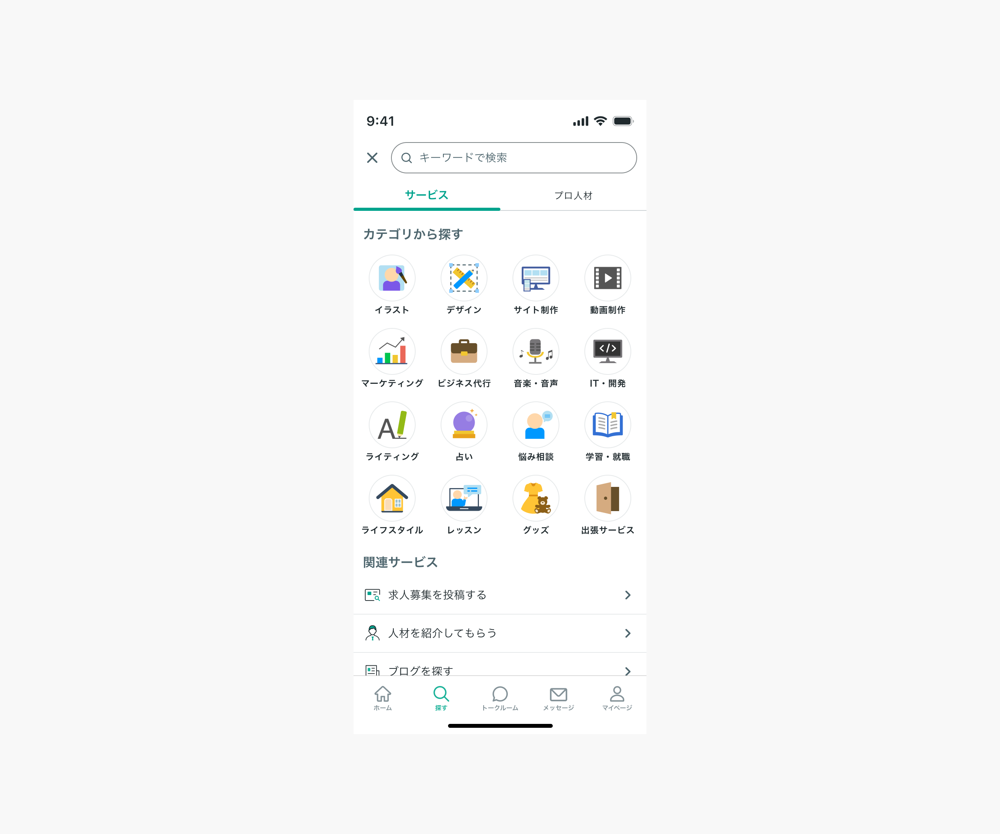
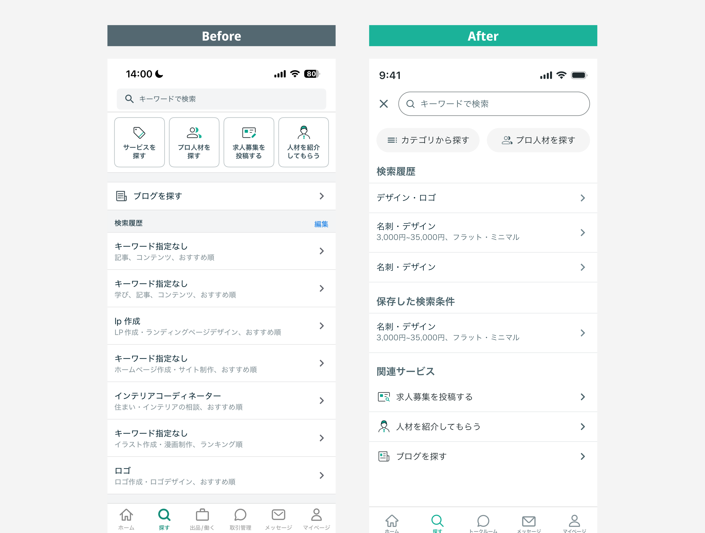

ココナラ「探すタブ」リニューアルPJ
Coconala Search Tab Improvement

はじめに
サービスを探すことがコアなプラットフォームにもかかわらず、探すタブには使われていない動線が混在していた。定量データ・競合調査から課題を特定し、ユーザーが迷わずサービスを探せるシンプルな画面へ再設計した施策。
ひと目でわかる Before / After
使われていない4つのグリッドボタンと低効率動線が上部を占有していた画面を、検索窓を最優先にしたシンプルな構成へ再設計。「探す」という本来の目的に最短で集中できる画面にした。

上部を占有していた横4列のグリッドボタンを、使用頻度の高い2つのコンパクトなボタンに集約。検索窓を最上部で強調した。
埋もれていた「保存した検索条件」（CVR全動線中最高）を検索履歴の直下に再配置し、活用率を引き上げる設計に。
購入CVR1%未満の求人投稿・人材紹介・ブログを「関連サービス」として最下部に移動。メイン動線のノイズを削減した。
目次
- 01プロジェクトの概要
- 02コンセプト設計の概要
- 03コア課題の解決に向けたUI設計
- 04プロトタイプ
- 05終わりに
※全体像は冒頭の「ひと目でわかる Before / After」を参照
プロジェクトの概要
CONCEPT
探すタブの動線をシンプルに再構成し、
紛らわしい低効率動線を整理することで、検索〜購入CVRを高める。
探すタブ表示UUを対象に各動線のCTR・CVRを集計したところ、検索窓と検索履歴の2動線だけでクリックの約9割を占めることが判明。一方、求人投稿・人材紹介・ブログの合計CTRは数%程度にとどまっていた。さらに「保存した検索条件」はCTRが集計構造上低くなる特性があるが、CVRは全動線中最高水準という事実も明らかに。低効率動線を整理・再配置し、検索から購入へのCVR向上を目指した。
STEP 01
定量データ分析
各動線のCTR・CVRを集計し、動線ごとの実態を可視化
STEP 02
競合調査
他社マーケットプレイスの検索タブUIを調査し、業界標準の設計パターンを整理
STEP 03
UI設計・改善提案
課題に基づき、動線の整理と情報設計の再構成を行った改善UIを提案
🧑💻 方向性を受け取り、課題定義から提案まで自律的に推進
PdMから「探すタブを改善したい」という大まかな方向性を受け取り、何が問題でどう直すべきかの定義から自分で担当。定量データ分析・競合調査・課題定義・施策立案・UI設計・執行会議への提案まで一貫して推進した。「何を作るか」のスコープ設計から関わった施策。
データから動線の実態を把握する
- 探すタブ 各動線のCTR集計
- CVRデータの整理・可視化
- 主要動線と低効率動線の特定
- 改善インパクトの試算
業界標準の設計パターンを整理する
- 他社マーケットプレイスアプリの調査
- 検索タブUIパターンの整理
- 共通設計パターンの抽出
- 自社との差分の明確化
改善すべき論点を明確にする
- 低CTR動線の特定・整理
- 高CVR経路の強化点を発見
- 情報設計の問題点の言語化
- 改善優先度の整理
改善UIとして再設計する
- チップUIへの変更提案
- 動線の再配置設計
- 保存条件の配置最適化
- Before / After の整理
コンセプト設計の概要
1. 定量データから動線の優先度を整理
探すタブ表示UUを対象に、各動線のCTR・CVRを集計。検索窓と検索履歴の2動線だけでクリックの約9割を占める一方、求人投稿・人材紹介・ブログの合計CTRは数%程度にとどまっていた。また「保存した検索条件」はCTRが集計構造上低くなる特性があるが、CVRは全動線中最高水準という事実も判明した。

✅ よく使われる動線
- 検索窓 CTR 6割台・CVR 高水準
- 検索履歴 CTR 2割台・CVR 高水準（再訪ユーザーに有効）
⚠️ ほとんど使われない動線
- 求人募集を投稿する 購入CVR 1%未満
- 人材を紹介してもらう
- ブログを探す
合計CTRは数%程度。探すタブでは活用されていない状態
⚡ 特殊な動線：保存した検索条件
CTRは集計構造上低くなる（保存条件が存在するユーザーにのみ表示されるため、全表示UUで割ると低く見える）が、CVRは全動線中最高水準。活用されれば最も購入につながる動線。
2. 競合調査から探すタブの設計パターンを整理
他社マーケットプレイスアプリの検索タブを調査したところ、多くが検索窓を最上部に固定し、検索履歴や保存条件を上部に配置するシンプルな構成を採用。使われていない動線をメイン画面に並べることは認知負荷を高め、探索行動の妨げになると判断した。
競合に共通する検索タブパターン
3. 複数案を検討し、最終案へ収束
最終案に至るまで、構成の異なる複数案を検討し、段階的に絞り込んだ。代表的な2案と、それぞれを見送った理由を残す。
■ 案A：タブで動線を分ける構成
複雑になりがちな検索履歴をタブ（サービス／プロ人材／ブログ）で整理し、カテゴリを一覧で見せる案。動線をタブで切り分けることで画面の交通整理を狙った。

🤔 案Aの狙い
- 複雑な検索履歴をタブで整理
- サービス／プロ人材／ブログを切り替え式に分割
- カテゴリを一覧で見やすく提示
⚠️ 見送った理由
- 検索窓を最優先で目立たせたいのに、タブとカテゴリ導線が目立ち、優先度が伝わらない
- 利用の少ないブログにまでタブの一等地を割くことになる
- ブログが3番目に目立つ優先順位となり、実態（低利用）と矛盾
■ 案B：タブを2つに絞り、カテゴリを圧縮した中間案
案Aから整理を進めた案。タブをサービス／プロ人材の2つに絞り、カテゴリを大きな画像カードからコンパクトなアイコングリッドに圧縮。ブログは関連サービスへ降格させた。

🤔 案Bの狙い
- タブをサービス／プロ人材の2つに削減
- カテゴリをアイコングリッドに圧縮し省スペース化
- ブログを関連サービスへ降格
⚠️ 見送った理由
- 圧縮してもカテゴリ一覧が画面の主役を占めたまま
- プロ人材をタブ内に入れると訴求が弱まる
- 結果「カテゴリだけで探すサービス」に見え、人材を探す軸が伝わらない
コア課題の解決に向けたUI設計

1. 横4列のアイコンボタンを2つのコンパクトなボタンに絞り込み
「カテゴリから探す」「プロ人材を探す」「求人募集を投稿する」「人材を紹介してもらう」の4つが横並びで占有していたスペースを、使用頻度の高い2つに絞ってコンパクトなボタンに変更。検索窓が最上部に強調され、画面の情報密度が下がり、ユーザーの視線を自然に検索窓へ誘導できる設計に。
✕ Before（現状）
- 4つのグリッドボタンが上部を占有
- ブログを探す がリスト上部に表示
- 検索履歴がその下に羅列
- 検索窓とメイン動線の優先度が視覚的に伝わらない
✓ After（改善案）
- 検索窓を最上部に固定し視線を誘導
- カテゴリ・プロ人材はコンパクトなボタンに変更
- 検索履歴を上部に、保存条件をその直下に配置
- 求人投稿・人材紹介・ブログは「関連サービス」として最下部に移動
2. 低効率な動線を「関連サービス」として下部に移動
「求人募集を投稿する」（購入CVRは1%未満）・「人材を紹介してもらう」・「ブログを探す」を探すタブのメインコンテンツから外し、画面下部の関連サービスセクションに整理。必要なユーザーには引き続き届きつつ、メイン動線のノイズを削減した。
プロトタイプ
📱 改善後の探すタブ — インタラクションプロトタイプ
動線整理・保存条件の配置最適化を反映した改善UIの操作感をFigmaプロトタイプで確認可能。
終わりに
🎯 削ることで価値を届ける
「追加」ではなく「整理」によってユーザー体験を改善した施策。定量データを根拠に低効率動線を特定し、POへの提案・合意形成までスムーズに推進できた。「なぜ削るのか」をデータで説明できたことが、意思決定のスピードを上げた。
💡 数値の裏にあるユーザー行動を読む
「保存した検索条件」のCTRが低く見える原因が集計構造にあると正しく読み解いた上で、CVRが全動線中最高という事実に着目したのが本施策の起点。数字の表面だけでなく、なぜそのデータになるのかという構造を読むことで、正しい設計判断につながった。情報設計がいかに体験に直結するかを実感したプロジェクト。
🧑💻 データと設計をつなぐ役割
定量分析から競合調査・UI設計・執行会議への提案まで1人で完遂。競合各社の検索タブが共通してシンプルな構成を採用していた事実が、「削る」判断の確信につながった。執行会議でデザイン承認を取得し、ロードマップへの採択につながった。
📌 次にやるなら：インパクト試算の設計
この施策では事前のインパクト試算を設計できなかった。「保存条件のCTRがX%上がればCVRにどう影響するか」という試算があれば、優先度の根拠がより強固になり、執行会議での説得力も高まったはず。施策の仮説を定量的に語れる力を鍛えること——次のプロジェクトへの課題として持ち越している。